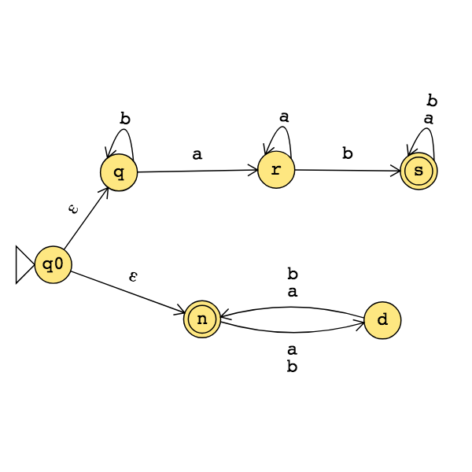
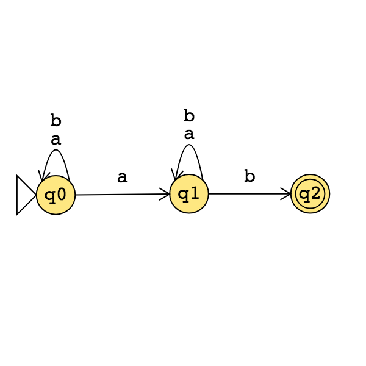
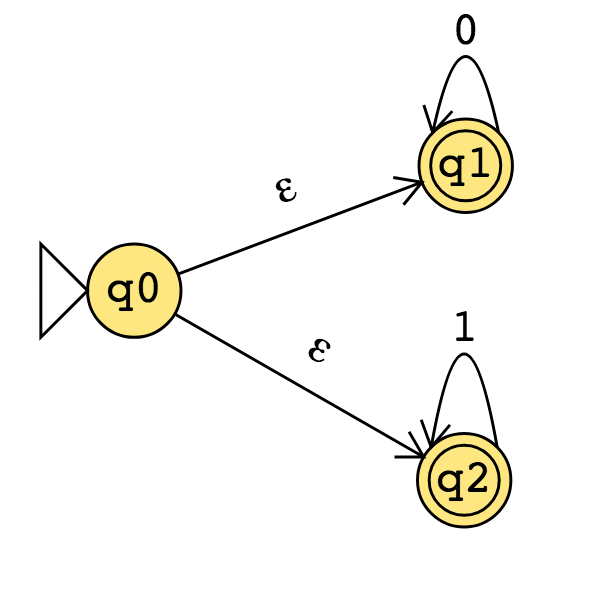
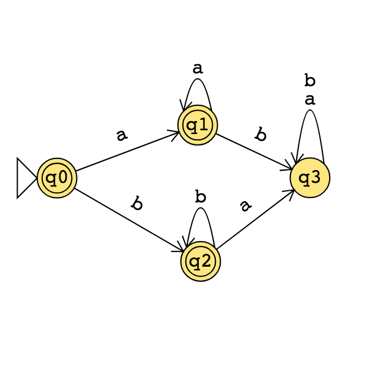
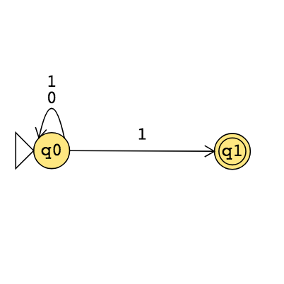

A set \(X\) is said to be closed under an operation \(OP\) if, for any elements in \(X\), applying \(OP\) to them gives an element in \(X\).
| True/False | Closure claim |
|---|---|
| True | The set of integers is closed under multiplication. |
| \(\forall x \forall y \left( ~(x \in \mathbb{Z} \wedge y \in \mathbb{Z})\to xy \in \mathbb{Z}~\right)\) | |
| True | For each set \(A\), the power set of \(A\) is closed under intersection. |
| \(\forall A_1 \forall A_2 \left( ~(A_1 \in \mathcal{P}(A) \wedge A_2 \in \mathcal{P}(A) \in \mathbb{Z}) \to A_1 \cap A_2 \in \mathcal{P}(A)~\right)\) | |
| The class of regular languages over \(\Sigma\) is closed under complementation. | |
| The class of regular languages over \(\Sigma\) is closed under union. | |
| The class of regular languages over \(\Sigma\) is closed under intersection. | |
| The class of regular languages over \(\Sigma\) is closed under concatenation. | |
| The class of regular languages over \(\Sigma\) is closed under Kleene star. | |
| The class of context-free languages over \(\Sigma\) is closed under complementation. | |
| The class of context-free languages over \(\Sigma\) is closed under union. | |
| The class of context-free languages over \(\Sigma\) is closed under intersection. | |
| The class of context-free languages over \(\Sigma\) is closed under concatenation. | |
| The class of context-free languages over \(\Sigma\) is closed under Kleene star. | |
Assume \(\Sigma = \{0,1, \#\}\)
| \(\Sigma^*\) | Regular / nonregular and context-free / not context-free |
| \(\{0^i\# 1^j \mid i \geq 0, j \geq 0\}\) | Regular / nonregular and context-free / not context-free |
| \(\{0^i1^j\# 1^j0^i \mid i \geq 0, j \geq 0\}\) | Regular / nonregular and context-free / not context-free |
| \(\{0^i1^j\# 0^i 1^j \mid i \geq 0, j \geq 0\}\) | Regular / nonregular and context-free / not context-free |
Turing machines: unlimited read + write memory, unlimited time (computation can proceed without “consuming” input and can re-read symbols of input)
Division betweeen program (CPU, state diagram) and data
Unbounded memory gives theoretical limit to what modern computation (including PCs, supercomputers, quantum computers) can achieve
State diagram formulation is simple enough to reason about (and diagonalize against) while expressive enough to capture modern computation
For Turing machine \(M= (Q, \Sigma, \Gamma, \delta, q_0, q_{accept}, q_{reject})\) the computation of \(M\) on a string \(w\) over \(\Sigma\) is:
Read/write head starts at leftmost position on tape.
Input string is written on \(|w|\)-many leftmost cells of tape, rest of the tape cells have the blank symbol. Tape alphabet is \(\Gamma\) with \(\textvisiblespace\in \Gamma\) and \(\Sigma \subseteq \Gamma\). The blank symbol \(\textvisiblespace \notin \Sigma\).
Given current state of machine and current symbol being read at the tape head, the machine transitions to next state, writes a symbol to the current position of the tape head (overwriting existing symbol), and moves the tape head L or R (if possible). Formally, transition function is \[\delta: Q\times \Gamma \to Q \times \Gamma \times \{L, R\}\]
Computation ends if and when machine enters either the accept or the reject state. This is called halting. Note: \(q_{accept} \neq q_{reject}\).
The language recognized by the Turing machine \(M\), is \[\{ w \in \Sigma^* \mid \textrm{computation of $M$ on $w$ halts after entering the accept state}\} = \{ w \in \Sigma^* \mid w \textrm{ is accepted by } M\}\]
An example Turing machine: \(\Sigma = \phantom{\hspace{1in}}, \Gamma = \phantom{\hspace{1in}}\) \[\delta ( ( q0, 0) ) =\]
Formal definition:
Sample computation:
| \(q0\downarrow\) | ||||||
|---|---|---|---|---|---|---|
| \(0\) | \(0\) | \(0\) | \(\textvisiblespace\) | \(\textvisiblespace\) | \(\textvisiblespace\) | \(\textvisiblespace\) |
The language recognized by this machine is …
Extra practice:

Formal definition:
Sample computation:
Sipser Figure 3.10
Conventions in state diagram of TM: \(b \to R\) label means \(b \to b, R\) and all arrows missing from diagram represent transitions with output \((q_{reject}, \textvisiblespace , R)\)
2

Implementation level description of this machine:
Zig-zag across tape to corresponding positions on either side of \(\#\) to check whether the characters in these positions agree. If they do not, or if there is no \(\#\), reject. If they do, cross them off.
Once all symbols to the left of the \(\#\) are crossed off, check for any un-crossed-off symbols to the right of \(\#\); if there are any, reject; if there aren’t, accept.
Computation on input string \(01\#01\)
| \(q_1 \downarrow\) | ||||||
|---|---|---|---|---|---|---|
| \(0\) | \(1\) | \(\#\) | \(0\) | \(1\) | \(\textvisiblespace\) | \(\textvisiblespace\) |
The language recognized by this machine is \[\{ w \# w \mid w \in \{0,1\}^* \}\]
Extra practice
Computation on input string \(01\#1\)
| \(q_1\downarrow\) | ||||||
|---|---|---|---|---|---|---|
| \(0\) | \(1\) | \(\#\) | \(1\) | \(\textvisiblespace\) | \(\textvisiblespace\) | \(\textvisiblespace\) |
Recap so far: In DFA, the only memory available is in the states. Automata can only “remember” finitely far in the past and finitely much information, because they can have only finitely many states. If a computation path of a DFA visits the same state more than once, the machine can’t tell the difference between the first time and future times it visits this state. Thus, if a DFA accepts one long string, then it must accept (infinitely) many similar strings.
Definition A positive integer \(p\) is a pumping length of a language \(L\) over \(\Sigma\) means that, for each string \(s \in \Sigma^*\), if \(|s| \geq p\) and \(s \in L\), then there are strings \(x,y,z\) such that \[s = xyz\] and \[|y| > 0, \qquad \qquad \text{ for each $i \geq 0$, $xy^i z \in L$}, \qquad \text{and} \qquad \qquad |xy| \leq p.\]
Negation: A positive integer \(p\) is not a pumping length of a language \(L\) over \(\Sigma\) iff \[\exists s \left(~ |s| \geq p \wedge s \in L \wedge \forall x \forall y \forall z \left( ~\left( s = xyz \wedge |y| > 0 \wedge |xy| \leq p~ \right) \to \exists i ( i \geq 0 \wedge xy^iz \notin L ) \right) ~\right)\] Informally:
Restating Pumping Lemma: If \(L\) is a regular language, then it has a pumping length.
Contrapositive: If \(L\) has no pumping length, then it is nonregular.
The Pumping Lemma cannot be used to prove that a language is regular.
The Pumping Lemma can be used to prove that a language is not regular.
Extra practice: Exercise 1.49 in the book.
Proof strategy: To prove that a language \(L\) is not regular,
Consider an arbitrary positive integer \(p\)
Prove that \(p\) is not a pumping length for \(L\)
Conclude that \(L\) does not have any pumping length, and therefore it is not regular.
Example: \(\Sigma = \{0,1\}\), \(L = \{ 0^n 1^n \mid n \geq 0\}\).
Fix \(p\) an arbitrary positive integer. List strings that are in \(L\) and have length greater than or equal to \(p\):
Pick \(s =\)
Suppose \(s = xyz\) with \(|xy| \leq p\) and \(|y| > 0\).
Then when \(i = \hspace{1in}\), \(xy^i z = \hspace{1in}\)
Example: \(\Sigma = \{0,1\}\), \(L = \{w w^{\mathcal{R}} \mid w \in \{0,1\}^*\}\).
Fix \(p\) an arbitrary positive integer. List strings that are in \(L\) and have length greater than or equal to \(p\):
Pick \(s =\)
Suppose \(s = xyz\) with \(|xy| \leq p\) and \(|y| > 0\).
Then when \(i = \hspace{1in}\), \(xy^i z = \hspace{1in}\)
Example: \(\Sigma = \{0,1\}\), \(L = \{0^j1^k \mid j \geq k \geq 0\}\).
Fix \(p\) an arbitrary positive integer. List strings that are in \(L\) and have length greater than or equal to \(p\):
Pick \(s =\)
Suppose \(s = xyz\) with \(|xy| \leq p\) and \(|y| > 0\).
Then when \(i = \hspace{1in}\), \(xy^i z = \hspace{1in}\)
Example: \(\Sigma = \{0,1\}\), \(L = \{0^n1^m0^n \mid m,n \geq 0\}\).
Fix \(p\) an arbitrary positive integer. List strings that are in \(L\) and have length greater than or equal to \(p\):
Pick \(s =\)
Suppose \(s = xyz\) with \(|xy| \leq p\) and \(|y| > 0\).
Then when \(i = \hspace{1in}\), \(xy^i z = \hspace{1in}\)
| Language | \(s \in L\) | \(s \notin L\) | Is the language regular or nonregular? |
|---|---|---|---|
| \(\{a^nb^n \mid 0 \leq n \leq 5 \}\) | |||
| \(\{b^n a^n \mid n \geq 2\}\) | |||
| \(\{a^m b^n \mid 0 \leq m\leq n\}\) | |||
| \(\{a^m b^n \mid m \geq n+3, n \geq 0\}\) | |||
| \(\{b^m a^n \mid m \geq 1, n \geq 3\}\) | |||
| \(\{ w \in \{a,b\}^* \mid w = w^\mathcal{R} \}\) | |||
| \(\{ ww^\mathcal{R} \mid w\in \{a,b\}^* \}\) | |||
Regular sets are not the end of the story
Many nice / simple / important sets are not regular
Limitation of the finite-state automaton model: Can’t "count", Can only remember finitely far into the past, Can’t backtrack, Must make decisions in "real-time"
We know actual computers are more powerful than this model...
The next model of computation. Idea: allow some memory of unbounded size. How?
To generalize regular expressions: context-free
grammars
To generalize NFA: Pushdown automata, which is like an NFA with access to a stack: Number of states is fixed, number of entries in stack is unbounded. At each step (1) Transition to new state based on current state, letter read, and top letter of stack, then (2) (Possibly) push or pop a letter to (or from) top of stack. Accept a string iff there is some sequence of states and some sequence of stack contents which helps the PDA processes the entire input string and ends in an accepting state.

Trace the computation of this PDA on the input string \(01\).
Trace the computation of this PDA on the input string \(011\).
Definition A pushdown automaton (PDA) is specified by a \(6\)-tuple \((Q, \Sigma, \Gamma, \delta, q_0, F)\) where \(Q\) is the finite set of states, \(\Sigma\) is the input alphabet, \(\Gamma\) is the stack alphabet, \[\delta: Q \times \Sigma_\varepsilon \times \Gamma_\varepsilon \to \mathcal{P}( Q \times \Gamma_\varepsilon)\] is the transition function, \(q_0 \in Q\) is the start state, \(F \subseteq Q\) is the set of accept states.
2 Formal definition
Draw the state diagram of a PDA with \(\Sigma = \Gamma\).
Draw the state diagram of a PDA with \(\Sigma \cap \Gamma = \emptyset\).
A PDA recognizing the set \(\{ \hspace{1.5 in} \}\) can be informally described as:
Read symbols from the input. As each 0 is read, push it onto the stack. As soon as 1s are seen, pop a 0 off the stack for each 1 read. If the stack becomes empty and there is exactly one 1 left to read, read that 1 and accept the input. If the stack becomes empty and there are either zero or more than one 1s left to read, or if the 1s are finished while the stack still contains 0s, or if any 0s appear in the input following 1s, reject the input.
State diagram for this PDA:
Consider the state diagram of a PDA with input alphabet \(\Sigma\) and stack alphabet \(\Gamma\).
| Label | means |
|---|---|
| \(a, b ; c\) when \(a \in \Sigma\), \(b\in \Gamma\), \(c \in \Gamma\) | |
| \(a, \varepsilon ; c\) when \(a \in \Sigma\), \(c \in \Gamma\) | |
| \(a, b ; \varepsilon\) when \(a \in \Sigma\), \(b\in \Gamma\) | |
| \(a, \varepsilon ; \varepsilon\) when \(a \in \Sigma\) | |
How does the meaning change if \(a\) is replaced by \(\varepsilon\)?
Note: alternate notation is to replace \(;\) with \(\to\)
For the PDA state diagrams below, \(\Sigma = \{0,1\}\).
| Mathematical description of language | State diagram of PDA recognizing language |
|---|---|
 |
|
 |
|
| \(\{ 0^i 1^j 0^k \mid i,j,k \geq 0 \}\) |
The state diagram of an NFA over \(\{a,b\}\) is below. The formal definition of this NFA is:

The language recognized by this NFA is:
Suppose \(A_1, A_2\) are languages over an alphabet \(\Sigma\). Claim: if there is a NFA \(N_1\) such that \(L(N_1) = A_1\) and NFA \(N_2\) such that \(L(N_2) = A_2\), then there is another NFA, let’s call it \(N\), such that \(L(N) = A_1 \cup A_2\).
Proof idea: Use nondeterminism to choose which of \(N_1\), \(N_2\) to run.
Formal construction: Let \(N_1 = (Q_1, \Sigma, \delta_1, q_1, F_1)\) and \(N_2 = (Q_2, \Sigma, \delta_2,q_2, F_2)\) and assume \(Q_1 \cap Q_2 = \emptyset\) and that \(q_0 \notin Q_1 \cup Q_2\). Construct \(N = (Q, \Sigma, \delta, q_0, F_1 \cup F_2)\) where
\(Q =\)
\(\delta: Q \times \Sigma_\varepsilon \to \mathcal{P}(Q)\) is defined by, for \(q \in Q\) and \(a \in \Sigma_{\varepsilon}\): \[\phantom{\delta((q,a))=\begin{cases} \delta_1 ((q,a)) &\qquad\text{if } q\in Q_1 \\ \delta_2 ((q,a)) &\qquad\text{if } q\in Q_2 \\ \{q1,q2\} &\qquad\text{if } q = q_0, a = \varepsilon \\ \emptyset\text{if } q= q_0, a \neq \varepsilon \end{cases}}\]
Proof of correctness would prove that \(L(N) = A_1 \cup A_2\) by considering an arbitrary string accepted by \(N\), tracing an accepting computation of \(N\) on it, and using that trace to prove the string is in at least one of \(A_1\), \(A_2\); then, taking an arbitrary string in \(A_1 \cup A_2\) and proving that it is accepted by \(N\). Details left for extra practice.
Over the alphabet \(\{a,b\}\), the language \(L\) described by the regular expression \(\Sigma^* a \Sigma^* b\)
includes the strings and excludes the strings
The state diagram of a NFA recognizing \(L\) is:
Suppose \(A_1, A_2\) are languages over an alphabet \(\Sigma\). Claim: if there is a NFA \(N_1\) such that \(L(N_1) = A_1\) and NFA \(N_2\) such that \(L(N_2) = A_2\), then there is another NFA, let’s call it \(N\), such that \(L(N) = A_1 \circ A_2\).
Proof idea: Allow computation to move between \(N_1\) and \(N_2\) “spontaneously" when reach an accepting state of \(N_1\), guessing that we’ve reached the point where the two parts of the string in the set-wise concatenation are glued together.
Formal construction: Let \(N_1 = (Q_1, \Sigma, \delta_1, q_1, F_1)\) and \(N_2 = (Q_2, \Sigma, \delta_2,q_2, F_2)\) and assume \(Q_1 \cap Q_2 = \emptyset\). Construct \(N = (Q, \Sigma, \delta, q_0, F)\) where
\(Q =\)
\(q_0 =\)
\(F =\)
\(\delta: Q \times \Sigma_\varepsilon \to \mathcal{P}(Q)\) is defined by, for \(q \in Q\) and \(a \in \Sigma_{\varepsilon}\): \[\delta((q,a))=\begin{cases} \delta_1 ((q,a)) &\qquad\text{if } q\in Q_1 \textrm{ and } q \notin F_1\\ \delta_1 ((q,a)) &\qquad\text{if } q\in F_1 \textrm{ and } a \in \Sigma\\ \delta_1 ((q,a)) \cup \{q_2\} &\qquad\text{if } q\in F_1 \textrm{ and } a = \varepsilon\\ \delta_2 ((q,a)) &\qquad\text{if } q\in Q_2 \end{cases}\]
Proof of correctness would prove that \(L(N) = A_1 \circ A_2\) by considering an arbitrary string accepted by \(N\), tracing an accepting computation of \(N\) on it, and using that trace to prove the string can be written as the result of concatenating two strings, the first in \(A_1\) and the second in \(A_2\); then, taking an arbitrary string in \(A_1 \circ A_2\) and proving that it is accepted by \(N\). Details left for extra practice.
Suppose \(A\) is a language over an alphabet \(\Sigma\). Claim: if there is a NFA \(N\) such that \(L(N) = A\), then there is another NFA, let’s call it \(N'\), such that \(L(N') = A^*\).
Proof idea: Add a fresh start state, which is an accept state. Add spontaneous moves from each (old) accept state to the old start state.
Formal construction: Let \(N = (Q, \Sigma, \delta, q_1, F)\) and assume \(q_0 \notin Q\). Construct \(N' = (Q', \Sigma, \delta', q_0, F')\) where
\(Q' = Q \cup \{q_0\}\)
\(F' = F \cup \{q_0\}\)
\(\delta': Q' \times \Sigma_\varepsilon \to \mathcal{P}(Q')\) is defined by, for \(q \in Q'\) and \(a \in \Sigma_{\varepsilon}\): \[\delta'((q,a))=\begin{cases} \delta ((q,a)) &\qquad\text{if } q\in Q \textrm{ and } q \notin F\\ \delta ((q,a)) &\qquad\text{if } q\in F \textrm{ and } a \in \Sigma\\ \delta ((q,a)) \cup \{q_1\} &\qquad\text{if } q\in F \textrm{ and } a = \varepsilon\\ \{q_1\} &\qquad\text{if } q = q_0 \textrm{ and } a = \varepsilon \\ \emptyset &\qquad\text{if } q = q_0 \textrm { and } a \in \Sigma \end{cases}\]
Proof of correctness would prove that \(L(N') = A^*\) by considering an arbitrary string accepted by \(N'\), tracing an accepting computation of \(N'\) on it, and using that trace to prove the string can be written as the result of concatenating some number of strings, each of which is in \(A\); then, taking an arbitrary string in \(A^*\) and proving that it is accepted by \(N'\). Details left for extra practice.
Application: A state diagram for a NFA over \(\Sigma = \{a,b\}\) that recognizes \(L (( \Sigma^* b)^* )\):
True or False: The state diagram of any DFA is also the state diagram of a NFA.
True or False: The state diagram of any NFA is also the state diagram of a DFA.
True or False: The formal definition \((Q, \Sigma, \delta, q_0, F)\) of any DFA is also the formal definition of a NFA.
True or False: The formal definition \((Q, \Sigma, \delta, q_0, F)\) of any NFA is also the formal definition of a DFA.
Consider the state diagram of an NFA over \(\{a,b\}\):

The language recognized by this NFA is
The state diagram of a DFA recognizing this same language is:
Suppose \(A\) is a language over an alphabet \(\Sigma\). Claim: if there is a NFA \(N\) such that \(L(N) = A\) then there is a DFA \(M\) such that \(L(M) = A\).
Proof idea: States in \(M\) are “macro-states" – collections of states from \(N\) – that represent the set of possible states a computation of \(N\) might be in.
Formal construction: Let \(N = (Q, \Sigma, \delta, q_0, F)\). Define \[M = (~ \mathcal{P}(Q), \Sigma, \delta', q', \{ X \subseteq Q \mid X \cap F \neq \emptyset \}~ )\] where \(q' = \{ q \in Q \mid \text{$q = q_0$ or is accessible from $q_0$ by spontaneous moves in $N$} \}\) and \[\delta' (~(X, x)~) = \{ q \in Q \mid q \in \delta( ~(r,x)~) ~\text{for some $r \in X$ or is accessible from such an $r$ by spontaneous moves in $N$} \}\]
Consider the state diagram of an NFA over \(\{0,1\}\). Use the “macro-state” construction to find an equivalent DFA.

Prune this diagram to get an equivalent DFA with only the “macro-states" reachable from the start state.
Suppose \(A\) is a language over an alphabet \(\Sigma\). Claim: if there is a regular expression \(R\) such that \(L(R) = A\), then there is a NFA, let’s call it \(N\), such that \(L(N) = A\).
Structural induction: Regular expression is built from basis regular expressions using inductive steps (union, concatenation, Kleene star symbols). Use constructions to mirror these in NFAs.
Application: A state diagram for a NFA over \(\{a,b\}\) that recognizes \(L(a^* (ab)^*)\):
Suppose \(A\) is a language over an alphabet \(\Sigma\). Claim: if there is a DFA \(M\) such that \(L(M) = A\), then there is a regular expression, let’s call it \(R\), such that \(L(R) = A\).
Proof idea: Trace all possible paths from start state to accept state. Express labels of these paths as regular expressions, and union them all.
Add new start state with \(\varepsilon\) arrow to old start state.
Add new accept state with \(\varepsilon\) arrow from old accept states. Make old accept states non-accept.
Remove one (of the old) states at a time: modify regular expressions on arrows that went through removed state to restore language recognized by machine.
Application: Find a regular expression describing the language recognized by the DFA with state diagram

Conclusion: For each language \(L\),
There is a DFA that recognizes \(L\) \(\exists M
~(M \textrm{ is a DFA and } L(M) = A)\)
if and only if
There is a NFA that recognizes \(L\) \(\exists N
~(N \textrm{ is a NFA and } L(N) = A)\)
if and only if
There is a regular expression that describes \(L\) \(\exists R
~(R \textrm{ is a regular expression and } L(R) =
A)\)
A language is called regular when any (hence all) of the above three conditions are met.
Theorem: For an alphabet \(\Sigma\), For each language \(L\) over \(\Sigma\),
\(L\) is recognized by some
DFA
iff
\(L\) is recognized by some NFA
iff
\(L\) is described by some regular
expression
If (any, hence all) these conditions apply, \(L\) is called regular.
Prove or Disprove: There is some alphabet \(\Sigma\) for which there is some language recognized by an NFA but not by any DFA.
Prove or Disprove: There is some alphabet \(\Sigma\) for which there is some finite language not described by any regular expression over \(\Sigma\).
Prove or Disprove: If a language is recognized by an NFA then the complement of this language is not recognized by any DFA.
| Set | Cardinality |
|---|---|
| \(\{0,1\}\) | |
| \(\{0,1\}^*\) | |
| \(\mathcal{P}( \{0,1\})\) | |
| The set of all languages over \(\{0,1\}\) | |
| The set of all regular expressions over \(\{0,1\}\) | |
| The set of all regular languages over \(\{0,1\}\) | |
Pumping Lemma (Sipser Theorem 1.70): If \(A\) is a regular language, then there is a number \(p\) (a pumping length) where, if \(s\) is any string in \(A\) of length at least \(p\), then \(s\) may be divided into three pieces, \(s = xyz\) such that
\(|y| > 0\)
for each \(i \geq 0\), \(xy^i z \in A\)
\(|xy| \leq p\).
True or False: A pumping length for \(A = \{ 0,1 \}^*\) is \(p = 5\).
True or False: A pumping length for \(A = \{1, 01, 001, 0001, 00001 \}\) is \(p = 4\).
True or False: A pumping length for \(A = \{0^j 1 \mid j \geq 0 \}\) is \(p = 3\).
True or False: For any language \(A\), if \(p\) is a pumping length for \(A\) and \(p' > p\), then \(p'\) is also a pumping length for \(A\).
Review: Formal definition of DFA: \(M = (Q, \Sigma, \delta, q_0, F)\)
2
Finite set of states \(Q\)
Alphabet \(\Sigma\)
Transition function \(\delta\)
Start state \(q_0\)
Accept (final) states \(F\)
In the state diagram of \(M\), how many outgoing arrows are there from each state?
\(M = ( \{ q, r, s\}, \{a,b\}, \delta, q, \{s\} )\) where \(\delta\) is (rows labelled by states and columns labelled by symbols):
| \(\delta\) | \(a\) | \(b\) |
|---|---|---|
| \(q\) | \(r\) | \(q\) |
| \(r\) | \(r\) | \(s\) |
| \(s\) | \(s\) | \(s\) |
The state diagram for \(M\) is
Give two examples of strings that are accepted by \(M\) and two examples of strings that are rejected by \(M\):
Add “labels" for states in the state diagram, e.g. “have not seen any of desired pattern yet” or “sink state”.
We can use the analysis of the roles of the states in the state diagram to describe the language recognized by the DFA.
\(L(M) =\)
A regular expression describing \(L(M)\) is
Let the alphabet be \(\Sigma_1 = \{0,1\}\).
A state diagram for a DFA that recognizes \(\{w \mid w~\text{contains at most two $1$'s} \}\) is
A state diagram for a DFA that recognizes \(\{w \mid w~\text{contains more than two $1$'s} \}\) is
Extra example: A state diagram for DFA recognizing \[\{w \mid w~\text{is a string over $\{0,1\}$ whose length is not a multiple of $3$} \}\]
Let \(n\) be an arbitrary positive integer. What is a formal definition for a DFA recognizing \[\{w \mid w~\text{is a string over $\{0,1\}$ whose length is not a multiple of $n$} \}?\]
Suppose A is a language over an alphabet \(\Sigma\). By definition, this means A is a subset of \(\Sigma^*\). Claim: if there is a DFA \(M\) such that \(L(M) = A\) then there is another DFA, let’s call it \(M'\), such that \(L(M') = \overline{A}\), the complement of \(A\), defined as \(\{ w \in \Sigma^* \mid w \notin A \}\).
Proof idea:
Proof:
A useful (optional) bit of terminology: the iterated transition function of a DFA \(M = (Q, \Sigma, \delta, q_0, F)\) is defined recursively by \[\delta^* (~(q,w)~) =\begin{cases} q \qquad &\text{if $q \in Q, w = \varepsilon$} \\ \delta( ~(q,a)~) \qquad &\text{if $q \in Q$, $w = a \in \Sigma$ } \\ \delta(~(\delta^*(q,u), a) ~) \qquad &\text{if $q \in Q$, $w = ua$ where $u \in \Sigma^*$ and $a \in \Sigma$} \end{cases}\]
Using this terminology, \(M\) accepts a string \(w\) over \(\Sigma\) if and only if \(\delta^*( ~(q_0,w)~) \in F\).
Fix \(\Sigma = \{a,b\}\). A state diagram for a DFA that recognizes \(\{w \mid w~\text{has $ab$ as a substring and is of even length} \}\):
Suppose \(A_1, A_2\) are languages over an alphabet \(\Sigma\). Claim: if there is a DFA \(M_1\) such that \(L(M_1) = A_1\) and DFA \(M_2\) such that \(L(M_2) = A_2\), then there is another DFA, let’s call it \(M\), such that \(L(M) = A_1 \cap A_2\).
Proof idea:
Formal construction:
Application: When \(A_1 = \{w \mid w~\text{has $ab$ as a substring} \}\) and \(A_2 = \{ w \mid w~\text{is of even length} \}\).
Suppose \(A_1, A_2\) are languages over an alphabet \(\Sigma\). Claim: if there is a DFA \(M_1\) such that \(L(M_1) = A_1\) and DFA \(M_2\) such that \(L(M_2) = A_2\), then there is another DFA, let’s call it \(M\), such that \(L(M) = A_1 \cup A_2\). Sipser Theorem 1.25, page 45
Proof idea:
Formal construction:
Application: A state diagram for a DFA that recognizes \(\{w \mid w~\text{has $ab$ as a substring or is of even length} \}\):
| Nondeterministic finite automaton \(M = (Q, \Sigma, \delta, q_0, F)\) | |
| Finite set of states \(Q\) | Can be labelled by any collection of distinct names. Default: \(q0, q1, \ldots\) |
| Alphabet \(\Sigma\) | Each input to the automaton is a string over \(\Sigma\). |
| Arrow labels \(\Sigma_\varepsilon\) | \(\Sigma_\varepsilon = \Sigma \cup \{ \varepsilon\}\). |
| Arrows in the state diagram are labelled either by symbols from \(\Sigma\) or by \(\varepsilon\) | |
| Transition function \(\delta\) | \(\delta: Q \times \Sigma_{\varepsilon} \to \mathcal{P}(Q)\) gives the set of possible next states for a transition |
| from the current state upon reading a symbol or spontaneously moving. | |
| Start state \(q_0\) | Element of \(Q\). Each computation of the machine starts at the start state. |
| Accept (final) states \(F\) | \(F \subseteq Q\). |
| \(M\) accepts the input string | if and only if there is a computation of \(M\) on the input string |
| that processes the whole string and ends in an accept state. | |
| Page 53 | |
The formal definition of the NFA over \(\{0,1\}\) given by this state diagram is:

The language over \(\{0,1\}\) recognized by this NFA is:
Change the transition function to get a different NFA which accepts the empty string.
The state diagram of an NFA over \(\{a,b\}\) is below. The formal definition of this NFA is:
The language recognized by this NFA is:
We will use vocabulary that should be familiar from your discrete math and introduction to proofs classes. Some of the notation conventions may be a bit different: we will use the notation from this class’ textbook1.
Write out in words the meaning of the symbols below: \[\{ a,b, c\}\]
\[| \{a, b, a \} | = 2\]
\[| aba | = 3\]
\[(a, 3, 2, b, b)\]
| Term | Typical symbol | Meaning |
|---|---|---|
| Alphabet | \(\Sigma\), \(\Gamma\) | A non-empty finite set |
| Symbol over \(\Sigma\) | \(\sigma\), \(b\), \(x\) | An element of the alphabet \(\Sigma\) |
| String over \(\Sigma\) | \(u\), \(v\), \(w\) | A finite list of symbols from \(\Sigma\) |
| The set of all strings over \(\Sigma\) | \(\Sigma^*\) | The collection of all possible strings formed from symbols from \(\Sigma\) |
| (Some) language over \(\Sigma\) | \(L\) | (Some) set of strings over \(\Sigma\) |
| Empty string | \(\varepsilon\) | The string of length \(0\) |
| Empty set | \(\emptyset\) | The empty language |
| Natural numbers | \(\mathcal{N}\) | The set of positive integers |
| Finite set | The empty set or a set whose distinct elements can be counted by a natural number | |
| Infinite set | A set that is not finite. | |
| Pages 3, 4, 13, 14 |
| Term | Notation | Meaning |
|---|---|---|
| Reverse of a string \(w\) | \(w^\mathcal{R}\) | write \(w\) in the opposite order, if \(w = w_1 \cdots w_n\) then \(w^\mathcal{R} = w_n \cdots w_1\). Note: \(\varepsilon^\mathcal{R} = \varepsilon\) |
| Concatenating strings \(x\) and \(y\) | \(xy\) | take \(x = x_1 \cdots x_m\), \(y=y_1 \cdots y_n\) and form \(xy = x_1 \cdots x_m y_1 \cdots y_n\) |
| String \(z\) is a substring of string \(w\) | there are strings \(u,v\) such that \(w = uzv\) | |
| String \(x\) is a prefix of string \(y\) | there is a string \(z\) such that \(y = xz\) | |
| String \(x\) is a proper prefix of string \(y\) | \(x\) is a prefix of \(y\) and \(x \neq y\) | |
| Shortlex order, also known as string order over alphabet \(\Sigma\) | Order strings over \(\Sigma\) first by length and then according to the dictionary order, assuming symbols in \(\Sigma\) have an ordering. | |
| Pages 13, 14 |
Circle the correct choice:
A string over an alphabet \(\Sigma\) is an element of \(\Sigma^*\) OR a subset of \(\Sigma^*\).
A language over an alphabet \(\Sigma\) is an element of \(\Sigma^*\) OR a subset of \(\Sigma^*\).
Extra examples for practice:
With \(\Sigma_1 = \{0,1\}\) and \(\Sigma_2 = \{a,b,c,d,e,f,g,h,i,j,k,l,m,n,o,p,q,r,s,t,u,v,w,x,y,z\}\) and \(\Gamma = \{0,1,x,y,z\}\)
An example of a string of length 3 over \(\Sigma_1\) is
An example of a string of length 1 over \(\Sigma_2\) is
The number of distinct strings of length 2 over \(\Gamma\) is
An example of a language over \(\Sigma_1\) of size \(1\) is
An example of an infinite language over \(\Sigma_1\) is
An example of a finite language over \(\Gamma\) is
True or False: \(\varepsilon \in \Sigma_1\)
True or False: \(\varepsilon\) is a string over \(\Sigma_1\)
True or False: \(\varepsilon\) is a language over \(\Sigma_1\)
True or False: \(\varepsilon\) is a prefix of some string over \(\Sigma_1\)
True or False: There is a string over \(\Sigma_1\) that is a proper prefix of \(\varepsilon\)
The first five strings over \(\Sigma_1\) in string order, using the ordering \(0 < 1\):
The first five strings over \(\Sigma_2\) in string order, using the usual alphabetical ordering for single letters:
Our motivation in studying sets of strings is that they encode problems.
We need to describe the collection of all strings that match the pattern or property of a problem.
Let’s start by thinking about how we can describe a language (a set of strings from a given alphabet).
Definition 1.52: A regular expression over alphabet \(\Sigma\) is a syntactic expression that can describe a language over \(\Sigma\). The collection of all regular expressions is defined recursively:
Basis steps of recursive definition
\(a\) is a regular expression, for \(a \in \Sigma\)
\(\varepsilon\) is a regular expression
\(\emptyset\) is a regular expression
Recursive steps of recursive definition
\((R_1 \cup R_2)\) is a regular expression when \(R_1\), \(R_2\) are regular expressions
\((R_1 \circ R_2)\) is a regular expression when \(R_1\), \(R_2\) are regular expressions
\((R_1^*)\) is a regular expression when \(R_1\) is a regular expression
The semantics (or meaning) of the syntactic regular expression is the language described by the regular expression. The function that assigns a language to a regular expression over \(\Sigma\) is defined recursively, using familiar set operations:
Basis steps of recursive definition
The language described by \(a\), for \(a \in \Sigma\), is \(\{a\}\) and we write \(L(a) = \{a\}\)
The language described by \(\varepsilon\) is \(\{\varepsilon\}\) and we write \(L(\varepsilon) = \{ \varepsilon\}\)
The language described by \(\emptyset\) is \(\{\}\) and we write \(L(\emptyset) = \emptyset\).
Recursive steps of recursive definition
When \(R_1\), \(R_2\) are regular expressions, the language described by the regular expression \((R_1 \cup R_2)\) is the union of the languages described by \(R_1\) and \(R_2\), and we write \[L(~(R_1 \cup R_2)~) = L(R_1) \cup L(R_2) = \{ w \mid w \in L(R_1) \lor w \in L(R_2)\}\]
When \(R_1\), \(R_2\) are regular expressions, the language described by the regular expression \((R_1 \circ R_2)\) is the concatenation of the languages described by \(R_1\) and \(R_2\), and we write \[L(~(R_1 \circ R_2)~) = L(R_1) \circ L(R_2) = \{ uv \mid u \in L(R_1) \land v \in L(R_2)\}\]
When \(R_1\) is a regular expression, the language described by the regular expression \((R_1^*)\) is the Kleene star of the language described by \(R_1\) and we write \[L(~(R_1^*)~) = (~L(R_1)~)^* = \{ w_1 \cdots w_k \mid k \geq 0 \textrm{ and each } w_i \in L(R_1)\}\]
For the following examples assume the alphabet is \(\Sigma_1 = \{0,1\}\):
The language described by the regular expression \(0\) is \(L(0) = \{ 0 \}\)
The language described by the regular expression \(1\) is \(L(1) = \{ 1 \}\)
The language described by the regular expression \(\varepsilon\) is \(L(\varepsilon) = \{ \varepsilon \}\)
The language described by the regular expression \(\emptyset\) is \(L(\emptyset) = \emptyset\)
The language described by the regular expression \(((0 \cup 1) \cup 1)\) is \(L(~((0 \cup 1) \cup 1)~) =\)
The language described by the regular expression \(1^+\) is \(L(~(1)^+~) =\)
The language described by the regular expression \(\Sigma_1^* 1\) is \(L(~\Sigma_1^* 1~) =\)
The language described by the regular expression \((\Sigma_1 \Sigma_1 \Sigma_1 \Sigma_1 \Sigma_1)^*\) is \(L(~(\Sigma_1 \Sigma_1 \Sigma_1 \Sigma_1 \Sigma_1)^*~) =\)
A regular expression that describes the language \(\{00, 01, 10, 11\}\) is
A regular expression that describes the language \(\{ 0^n1 \mid n~\text{is even} \}\) is
Shorthand and conventions
| Assuming \(\Sigma\) is the alphabet, we use the following conventions | |
|---|---|
| \(\Sigma\) | regular expression describing language consisting of all strings of length \(1\) over \(\Sigma\) |
| \(*\) then \(\circ\) then \(\cup\) | precedence order, unless parentheses are used to change it |
| \(R_1R_2\) | shorthand for \(R_1 \circ R_2\) (concatenation symbol is implicit) |
| \(R^+\) | shorthand for \(R^* \circ R\) |
| \(R^k\) | shorthand for \(R\) concatenated with itself \(k\) times, where \(k\) is a natural number |
| Pages 63 - 65 | |
Caution: many programming languages that support regular expressions build in functionality that is more powerful than the “pure” definition of regular expressions given here.
Regular expressions are everywhere (once you start looking for them).
Software tools and languages often have built-in support for regular expressions to describe patterns that we want to match (e.g. Excel/ Sheets, grep, Perl, python, Java, Ruby).
Under the hood, the first phase of compilers is to transform the strings we write in code to tokens (keywords, operators, identifiers, literals). Compilers use regular expressions to describe the sets of strings that can be used for each token type.
Next time: we’ll start to see how to build machines that decide whether strings match the pattern described by a regular expression.
Extra examples for practice:
Which regular expression(s) below describe a language that includes the string \(a\) as an element?
\(a^* b^*\)
\(a(ba)^* b\)
\(a^* \cup b^*\)
\((aaa)^*\)
\((\varepsilon \cup a) b\)
Review: Determine whether each statement below about regular expressions over the alphabet \(\{a,b,c\}\) is true or false:
True or False: \(a \in L(~(a \cup b )~\cup c)\)
True or False: \(ab \in L(~ (a \cup b)^* ~)\)
True or False: \(ba \in L( ~ a^* b^* ~)\)
True or False: \(\varepsilon \in L(a \cup b \cup c)\)
True or False: \(\varepsilon \in L(~ (a \cup b)^* ~)\)
True or False: \(\varepsilon \in L( ~ a^* b^* ~)\)
From the pre-class reading, pages 34-36: A deterministic finite automaton (DFA) is specified by \(M = (Q, \Sigma, \delta, q_0, F)\). This \(5\)-tuple is called the formal definition of the DFA. The DFA can also be represented by its state diagram: with nodes for the state, labelled edges specifying the transition function, and decorations on nodes denoting the start and accept states.
Finite set of states \(Q\) can be labelled by any collection of distinct names. Often we use default state labels \(q0, q1, \ldots\)
The alphabet \(\Sigma\) determines the possible inputs to the automaton. Each input to the automaton is a string over \(\Sigma\), and the automaton “processes” the input one symbol (or character) at a time.
The transition function \(\delta\) gives the next state of the DFA based on the current state of the machine and on the next input symbol.
The start state \(q_0\) is an element of \(Q\). Each computation of the machine starts at the start state.
The accept (final) states \(F\) form a subset of the states of the DFA, \(F \subseteq Q\). These states are used to flag if the machine accepts or rejects an input string.
The computation of a machine on an input string is a sequence of states in the machine, starting with the start state, determined by transitions of the machine as it reads successive input symbols.
The DFA \(M\) accepts the given input string exactly when the computation of \(M\) on the input string ends in an accept state. \(M\) rejects the given input string exactly when the computation of \(M\) on the input string ends in a nonaccept state, that is, a state that is not in \(F\).
The language of \(M\), \(L(M)\), is defined as the set of all strings that are each accepted by the machine \(M\). Each string that is rejected by \(M\) is not in \(L(M)\). The language of \(M\) is also called the language recognized by \(M\).
What is finite about all deterministic finite automata? (Select all that apply)
The size of the machine (number of states, number of arrows)
The number of strings that are accepted by the machine
The length of each computation of the machine
The formal definition of this DFA is
Classify each string \(a, aa, ab, ba, bb, \varepsilon\) as accepted by the DFA or rejected by the DFA.
Why are these the only two options?
The language recognized by this DFA is
The language recognized by this DFA is
The language recognized by this DFA is
| Model of Computation | Class of Languages |
| Deterministic finite automata: formal definition, how to design for a given language, how to describe language of a machine? Nondeterministic finite automata: formal definition, how to design for a given language, how to describe language of a machine? Regular expressions: formal definition, how to design for a given language, how to describe language of expression? Also: converting between different models. | Class of regular languages: what are the closure properties of this class? which languages are not in the class? using pumping lemma to prove nonregularity. |
| Push-down automata: formal definition, how to design for a given language, how to describe language of a machine? Context-free grammars: formal definition, how to design for a given language, how to describe language of a grammar? | Class of context-free languages: what are the closure properties of this class? which languages are not in the class? |
| Turing machines that always halt in polynomial time | \(P\) |
| Nondeterministic Turing machines that always halt in polynomial time | \(NP\) |
| Deciders (Turing machines that always halt): formal definition, how to design for a given language, how to describe language of a machine? | Class of decidable languages: what are the closure properties of this class? which languages are not in the class? using diagonalization and mapping reduction to show undecidability |
| Turing machines formal definition, how to design for a given language, how to describe language of a machine? | Class of recognizable languages: what are the closure properties of this class? which languages are not in the class? using closure and mapping reduction to show unrecognizability |
Given a language, prove it is regular
Strategy 1: construct DFA recognizing the language and prove it works.
Strategy 2: construct NFA recognizing the language and prove it works.
Strategy 3: construct regular expression recognizing the language and prove it works.
“Prove it works” means …
Example: \(L = \{ w \in \{0,1\}^* \mid \textrm{$w$ has odd number of $1$s or starts with $0$}\}\)
Using NFA
Using regular expressions
Example: Select all and only the options that result in a true statement: “To show a language \(A\) is not regular, we can…”
Show \(A\) is finite
Show there is a CFG generating \(A\)
Show \(A\) has no pumping length
Show \(A\) is undecidable
Example: What is the language generated by the CFG with rules \[\begin{aligned} S &\to aSb \mid bY \mid Ya \\ Y &\to bY \mid Ya \mid \varepsilon \end{aligned}\]
Example: Prove that the language \(T = \{ \langle M \rangle \mid \textrm{$M$ is a Turing machine and $L(M)$ is infinite}\}\) is undecidable.
Example: Prove that the class of decidable languages is closed under concatenation.
Page references are to the 3rd edition (International) of Siper’s Introduction to the Theory of Computation, available at the campus bookstore for under $20. Copies of the book are also available for those who can’t access the book to borrow from the course instructor, while supplies last (minnes@eng.ucsd.edu)↩︎